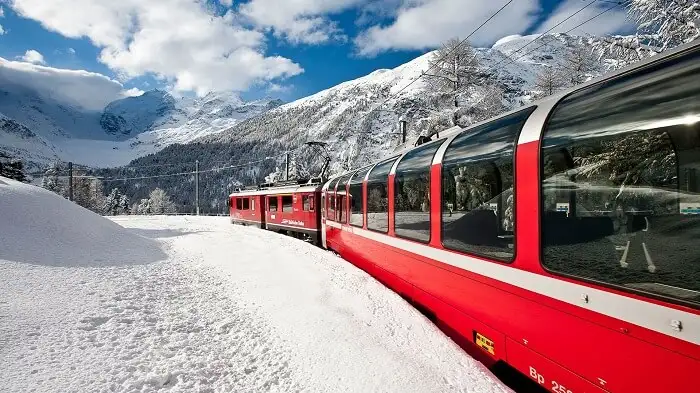

While there are a multitude of options to enjoy the spectacular beauty of Switzerland, the most amazing is to take a train ride. It’s a great way to get around and savour the picturesque scenery with your eyes.
One of the most thrilling activities you can try here is paragliding. It is a chance to behold the splendid Matterhorn view!

This is one of the best things to do in Switzerland if you love trekking and hiking and if you are an adventure enthusiast. This is basically hiking a downhill trail. his is one of the most beautiful and picturesque mountains in Alps.